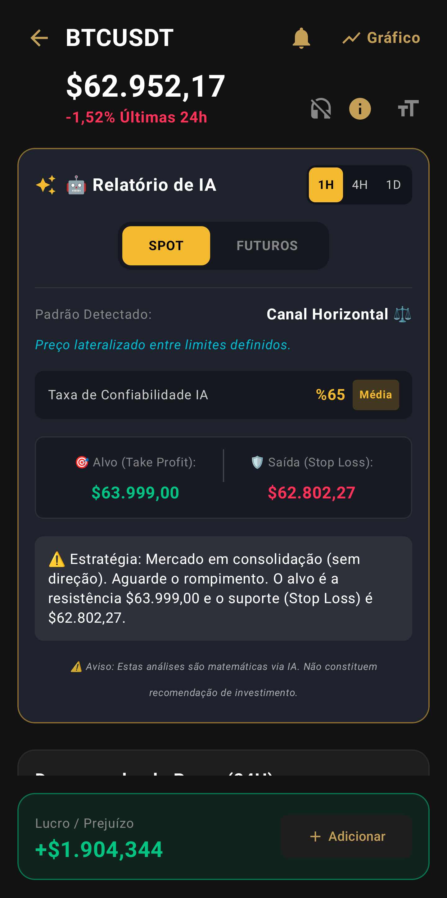

Radar IA Spot e Futuros Ativo
Não apenas rastreie cripto,
Entenda-a.
Use ferramentas financeiras premium de forma totalmente gratuita. Um rastreador de criptomoedas com IA de última geração, gráficos ao vivo e terminal de gestão de portfólio projetado para investidores.

